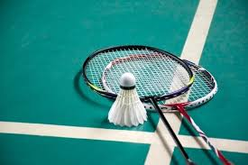

Badminton Facts:
It was made in British India from the earlier game of battledore and shuttlecock. This sport became popular in Denmark and really popular in Asia. It was debuted in 1992 as a Summer Olympic sport with four events. It can go up to speeds of 565 km/hour. The first badminton club was established in 1877. The shuttles are made of feathers.
- Its original name wasnt badminton
- It was created in British India
- It became really popular in Asia even thought it didnt originate there
- I like badminton
- I play like 3 times a week
- I like playing with my friends.
- Playing with friends:
- I play with my friend Rakshan and Srigan
- Playing:
- I play thrice a week at a nearby place called the YMCA
- Time:
- Usually I play for 2 hours each time I play.

How the rackets look.
My Favorite Players Latest Match Scores
| Player |
Score |
Accuracy |
| Set 1 |
Set 2 |
| Lee Chong Wei |
21 |
21 |
98 |
| Lin Dan |
18 |
19 |
97 |